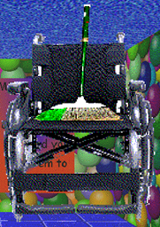

"Disabled Sweep" is the Gotta Sweep replacement in "Freddo's Awsome Math Game!"(/"FAMG").
Aliases
Disabled Sweep, Unnamed Gotta Sweep Replacement.
Appearance
Disabled Sweep appears as a poorly edited image of a LIBMAN™ "Precision Angle" broom sat on an image of a basic black wheelchair.
Gallery

Trivia
- Disabled Sweep isn't related to Gotta Sweep.
- Due to being a broom, it isn't clear why Disabled Sweep is stuck using a wheelchair.
- Disabled Sweep dislikes being stuck in a wheelchair.
Return to Main Page